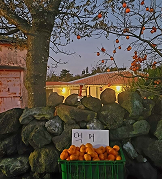
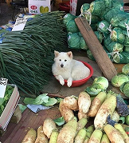
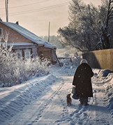

2026 11월호
마을 사진 교실을 함께할 강사를 찾습니다
주민들이 스마트폰으로 일상을 찍고 사진을 정리 하는 방법을 배울 수 있도록 사진 교실 강사를 모집합니다! 수업은 마을회관에서 소규모로 진행하며 풍경 촬영과…
참여하셨던 프로젝트가 지금 어떻게 진행되고 있는지, 마을에서 새로
찾는 사람은 누구인지 한 달에 한 번 소식을 보내드립니다.
2026 11월호
주민들이 스마트폰으로 일상을 찍고 사진을 정리 하는 방법을 배울 수 있도록 사진 교실 강사를 모집합니다! 수업은 마을회관에서 소규모로 진행하며 풍경 촬영과…
2026 11월호
지난 마을길 기록 프로젝트에서 방문자들이 남긴 사진과 메모를 주민들과 함께 정리했습니다. 돌담길과 느티나무, 잠시 쉬어 갔던 쉼터를 한 장의 사진 지도에 담았어요
2026 11월호
이번 제철 코너에서는 가을 감을 소개합니다. 잘 익은 감을 이웃과 나누는 일도 마을의 계절 풍경 중 하나예요. 실제 판매를 시작할 때는 생산자, 품종, 중량과 가격, 보…

마을의 늦가을 안부와 참여 프로젝트의 변화, 새롭게 열린 참여 기회와 제철 먹거리를 한 통에 담았습니다.

함께 만든 사진 지도의 변화와 새 수업의 준비, 가을 감 소식을 담았습니다.

주민들의 사진과 방문자의 기록이 만나는 시간. 마을 기록과 참여 기회, 제철 들깨를 전합니다.
다로리 소식이 더 궁금하다면,
구독 신청 기능 준비 중입니다. 입력한 정보는 전송·저장되지 않습니다.